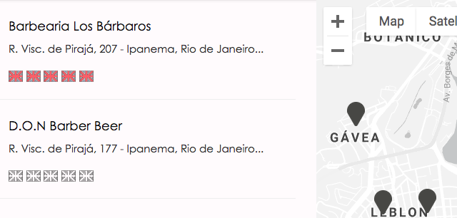
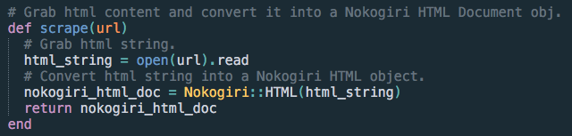
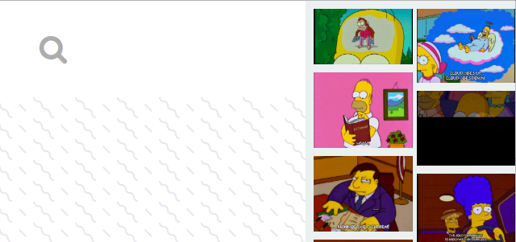
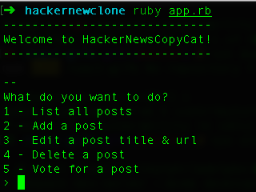
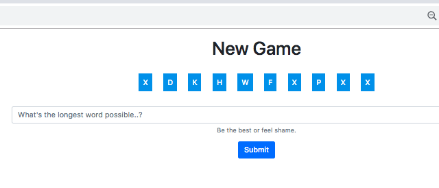
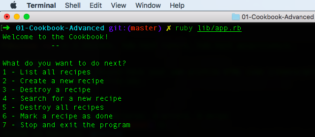

|  |
Polyglot
Web app Ruby on Rails feito em duas semanas com outros 3 integrantes:
Eleonora Kiziv (Russia), Steve Knight (Inglaterra) e Sachi Saito (Japão).
Nesta plataforma, turistas podem avaliar o inglês dos estabelecimentos cariocas e encontrar serviços que falam inglês bem. O Google Places API foi usado em conjunto com o Google Maps API.
|
|  |
Aliexpress Scraper
Um programa para dropshippers escrito em Ruby. O usuário seleciona uma categoria no Aliexpress e pega as informações dos produtos desta (nome, preço, quantidade em estoque, formas de envio, etc).
|
|  |
React Gifs
Feito para aprender React JS (entender os components e como se comunicam sem Redux).
Assim que o usuário pesquisar por um gif, a barra da direita atualiza sua lista de gifs chamando o Giphy API.
Ao clicar em qualquer um dos gifs na direita, o gif principal é atualizado.
|
|  |
Hacker News Clone
Clone do Hacker News que funciona no terminal.
Escrito em Ruby e SQL, este projeto foi um estudo do padrão arquitetônico MVC. O usuário pode: listar, criar, editar, deletar e votar em postagens.
|
|  |
Longest Word Game
Jogo escrito em Ruby, JavaScript, HTML e CSS.
Neste jogo o usuário deve escrever a maior palavra que ele conseguir usando apenas as letras fornecidas pelo programa.
O API Wagon Dictionary é chamado para validar a palavra. Quanto mais rápida for a resposta e quanto maior for a palavra, maior a pontuação.
|
|  |
Cookbook
Um simple livro de receitas escrito em Ruby e SQL. O usuário pode: listar, criar, visualizar, atualizar e deletar receitas.
Criado para botar em prática o CRUD e a programação orientada a objetos.
|
Arthur Philadelpho é um desenvolvedor full stack autodidata. Depois de programar como hobby por 5 anos, decidiu levar o desenvolvimento como carreira. Nas horas vagas, Arthur gosta de praticar calistenia.